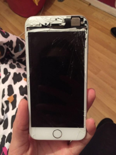

Robotic Arts Intro Fall 2017 (IA277.01)
- Instructor: Lucas Haroldsen (lharoldsen@mica.edu)
- Class Site: yasunaga.work/raif17
- syllabus: syllabus.pdf
- Resources: links.html
01/20: Speculations --- [Introductions]

Welcome to class for Robotic Arts Introduction!
This class is an introduction class. If you have never worked with electronics don’t worry, you are in the right place. We will speculate, learn, and experiment with electronics and you will make mistakes! So here are some rules.
- Don’t be afraid to make mistakes! The sole purpose of this class is experimentation, and experimentation is risky.
- Take a risk! Try something you are not sure would work. You might discover something you weren’t looking for
- Don’t worry about making a masterpiece. Again, this is an intro class which surveys various ways of working. Think of this class as an idea exercise class. If you learn something in 10 mistakes, it is better than not learning anything from one success.
- Work economically! Start small and build it up
- Make notes and sketches. Document your discoveries before you forget about them
- Pay attention! Often when you are working with electronics, small changes make big differences
- Take breaks. when you stare at your project to close and too long, you cant see anything any more. Go look at the sky
- Avoid hooking battery in backwards
- Don’t drink and solder
- Don’t take anything apart that plugs directly into the wall
Syllabus and Schedule
- Focus, Goals, Learning Objectives
- Grading
- Student responsibilities
- Schedule
Some Inspirations
Here are some things to get thinking about robots and electronics around us...
Relationships
Zaven Paré
Interactive experiment with robot (Geminoid - Robotic clone of human) A robot trying to act normal by perceiving human who is reacting to the robot trying to act “normal”
Hroshi Ishigro Laboratories
Conpanion Robot Paro
Therapudic companion robot project "paro"
Norman White - The Helpless Robot
Interfacing
Ranjit Bhatnagar - 28 Instruments, 28 Days
materiality
when thousands of cable crowded the skies
trans-Pacific Cable Landing station
Dan Wilson

Accident gives us unique oppetunity to peak in
littleBits

littleBits is a modular and physical programing platform that affords quick electronic experimentation
github repository for little bits schimatics and documentationMaterials and Tools for this class
here are list of materials you will need to get for the first half of the semester. Second half of the semester there will be minimal required purchases.
- Arduino Uno R3 (25 ~ $30)
- USB cord A to B (one that is commonly used on printers)(3 ~ $5)
- 400+ pin Breadboard (prototyping board) (5 ~ $8)
- Jumper wire kit(preformed or flexible)
- Small storage container for your projects
There are many clones of Arduino and they might be a little cheaper, but for the sake of ease and consistency let's make sure we all get Arduino Uno R3. It will probably save you some troubles...
Here are some places to buy Arduino:
- Amazon prime is free for 6 months for students
- Arduino.ccArduino official website.
- Adafruit Close in NYC, generally fast shipping
- Sparkfun shipping can be slow
Be sure to get the USB A-B cable!